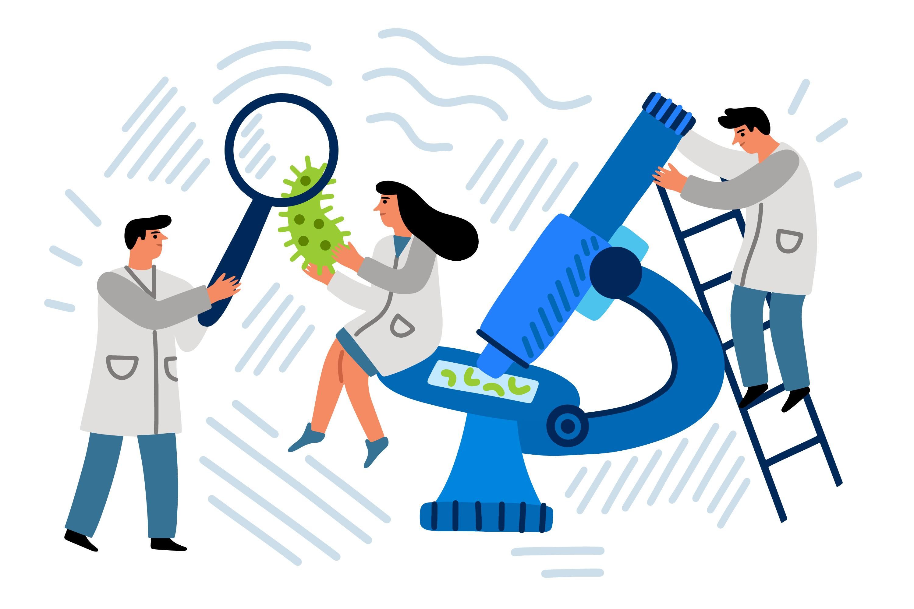

About Us
The Association of Mathematicians and Scientists is dedicated
to fostering collaboration, communication and innovation among professionals,
researchers, educators and enthusiasts in the STEM fields. As a central hub
for the AMS community, our platform aims to facilitate meaningful interaction,
knowledge sharing and continuous learning opportunities.
AMS serves as a dynamic and interactive space where members can engage in
collaborative research projects, share valuable resources, participate in
discussions, and access a wide range of educational materials, online
courses, and professional development resources.
With a focus on inclusion, usability, and responsiveness,
our AMS is designed to meet the diverse needs of mathematicians,
scientists, educators, students, academic institutions, research
organizations, industry partners, policymakers, and stakeholders
interested in STEM disciplines.
We aim to empower our members and contribute to the advancement of
mathematics and science globally through our key features such as
membership management, event coordination, resource library, community
forums, news updates, collaboration tools and administrative dashboard.
Our commitment to excellence is reflected in our adherence to industry
standards, data protection regulations and continuous quality assurance efforts.
We strive to create a safe, accessible, and engaging online environment that
fosters collaboration, knowledge sharing, and community building in mathematics
and science.
Join us in shaping the future of STEM education, research and innovation through
the Association of Mathematicians and Scientists.
The "Association of Mathematicians and Scientists (AMS)" is a dynamic and inclusive community
dedicated to advancing knowledge, fostering collaboration, and promoting excellence in the
fields of mathematics and science. Our organization brings together practitioners, researchers,
educators, students and enthusiasts from diverse backgrounds and disciplines, creating a
vibrant ecosystem for innovation and discovery.
Our Mission
At the Association of Mathematicians and Scientists (AMS), our mission is to empower individuals and institutions in their pursuit of excellence in mathematics and science. We are dedicated to fostering a community that thrives on collaboration, knowledge sharing, and continuous learning. Our key objectives include:

- Facilitating Collaboration and Knowledge Sharing
- Providing Resources and Support for Professional Development
- Promoting Diversity, Equity, and Inclusion in Science, Technology, Engineering, and Mathematics
- Fostering a Culture of Innovation and Continuous Learning
AMS provides a platform where members can connect, collaborate on research projects, and share valuable insights and expertise. By fostering a culture of collaboration, we aim to accelerate progress and innovation in mathematics and science.
We offer a wide range of resources, including research materials, educational tools, and networking opportunities, to support the professional development of our members. Through workshops, seminars, and mentorship programs, we help individuals enhance their skills and advance their careers in STEM fields.
AMS is committed to promoting diversity, equity, and inclusion in STEM fields. We actively advocate for equal opportunities and representation for underrepresented groups, ensuring that everyone has a voice and a chance to contribute to the advancement of mathematics and science.
Innovation is at the heart of AMS. We encourage a culture of creativity, experimentation, and risk-taking, where new ideas and approaches are embraced. Through continuous learning initiatives, such as online courses, webinars, and conferences, we inspire our members to stay updated with the latest developments and trends in their respective fields.
What we do


Our values
Excellence
At AMS, our spirit is rooted in an unwavering commitment to excellence across all endeavors. This steadfast dedication is reflected in our adherence to stringent standards of quality, integrity, and innovation. Through relentless pursuit of excellence, we ensure impactful, reliable, and outstanding efforts in mathematics and sciences.
Collaboration
Collaboration is our cornerstone, harnessing collective synergy for impactful teamwork. Diverse perspectives and skills unravel complex challenges, driving progress and unity. Our ethos nurtures innovation and unity, unlocking boundless potential for solutions that resonate across communities and enrich society at large.
Inclusion
Inclusion guides our interactions and choices, valuing diversity and creating a welcoming space for all. We foster creativity, innovation, and depth through inclusive practices, enriching experiences, achieving collaboratively, and strengthening our collective bonds for a more integrated community.
Progress
AMS champions lifelong learning for personal and professional growth, fostering curiosity, exploration, and ongoing development. We empower members to acquire skills, gain insights, and stay at the cutting edge of mathematics and science. Nurturing knowledge thirst enhances individual potential and fuels collective progress and innovation.
Join us
Whether you're a seasoned professional, budding researcher, educator, or simply passionate about math and science, AMS welcomes you to join our community. Together, we can shape the future of science, technology, engineering and mathematics education, research and innovation. This comprehensive content provides a comprehensive overview of the Association of Mathematicians and Scientists, its mission, activities, values, and opportunities for collaboration and engagement.


Join the Association of Mathematicians and Scientists
Empower Yourself and Contribute to Advancing Mathematics and Science
Join the Association of Mathematicians and Scientists Empower yourself and contribute to the development of mathematics and science Join us to collaborate with professionals in your field, access free training and educational resources, contribute to environmental sustainability initiatives, and enjoy membership benefits for a nominal fee. Collaborate with professionals in your field Access free training and educational resources Contribute to environmental sustainability initiatives There are no membership fees or obligations
Collaborate with professionals in your field
Access free training and educational resources
Contribute to environmental sustainability initiatives
There are no membership fees or obligations
Join Now